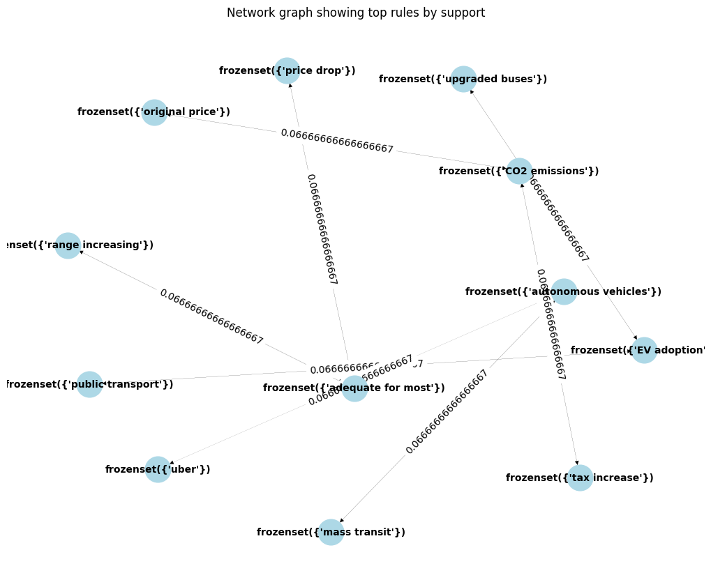
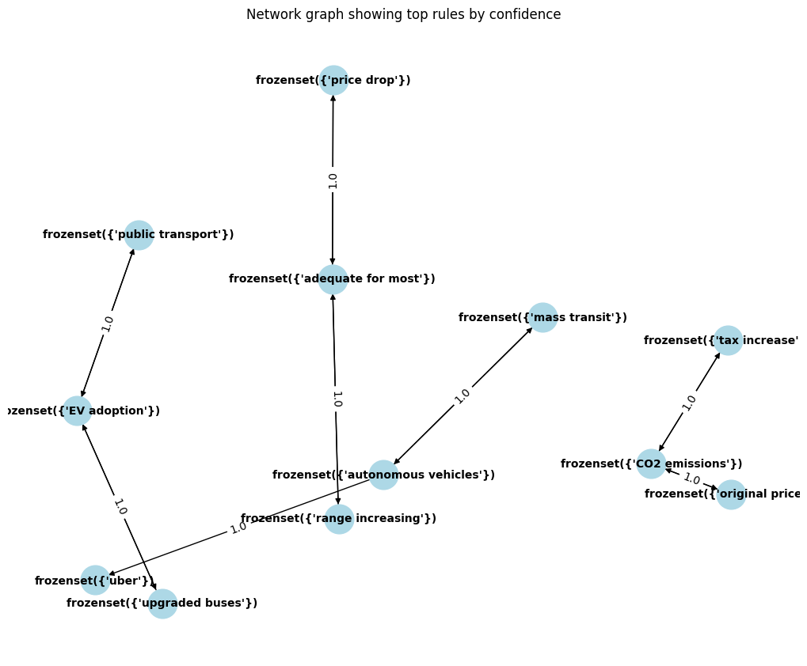

ARM stands for Association Rule Mining, a data mining technique used to find hidden patterns and relationships in large datasets. It's often used in market basket analysis to discover items frequently purchased together. ARM identifies sets of items that often appear together in transactions and expresses these relationships as rules.
An association rule has two parts: an antecedent (if) and a consequent (then). For example, if a person buys bread (antecedent), they are likely to buy butter (consequent). The strength of an association rule is measured using three key metrics:
To use ARM on your data, you'll typically follow these steps:
For the data to be a collection of comments on electric vehicles, ARM can help us understand the associations between different opinions, characteristics mentioned about EVs, and the context in which they are discussed. For example, we could find rules that show when cost is mentioned, range anxiety or charging times are also likely to be a concern. Or, if subsidies are discussed, there may be a related discussion about government policy or tax incentives.
Before applying ARM, it would be essential to preprocess the data to encode it into a transactional format, where each comment is a transaction and the items are the topics or keywords within each comment.
ARM, or Association Rule Mining, is particularly interested in discovering interesting relationships between variables in large databases. It does not require labeled data in the sense of supervised learning, where each instance of data must have a predefined class or label. Instead, ARM works with unlabeled transaction data.
Here's what this means:
To prepare data for ARM, one typically converts the dataset into a list of transactions. For textual data, this would mean processing comments to extract relevant terms or topics, then organizing them as separate transactions. This format is akin to a list where each entry represents a transaction and contains a set of items (terms, keywords, products, etc.).
Here's a step-by-step explanation using your context of comments on electric vehicles:
The image visualizes a sample of transaction data as it would be prepared for Association Rule Mining. Each row in the table represents an individual transaction and includes a list of items (keywords or topics) that were extracted from comments about electric vehicles. These items correspond to key subjects such as 'battery life', 'charging stations', 'range anxiety', and 'government subsidies', which are crucial in understanding the discussions around electric vehicles in the comments.
This sample serves as a conceptual representation of how your dataset might be formatted after the preprocessing steps I mentioned earlier. Each row would be analyzed by an ARM algorithm to find frequent patterns and derive association rules.
Image 1 shows the top rules by support, where the thickness of the edges represents the support or strength of the relationship between the connected nodes.
The most strongly supported rules in Image 1 include "price drop", "upgraded buses", "original price", and "range increasing". These factors seem to be related to the cost and performance of vehicles. Some other notable rules with strong support are "CO2 emissions", "autonomous vehicles", "adequate for most", "public transport", "uber", and "tax increase". These rules appear to be related to environmental concerns, transportation options, and taxation policies.
Image 2 shows the same set of rules, but with the edges representing the confidence or certainty associated with each relationship.
In Image 2, the rules with the highest confidence levels are "price drop", "adequate for most", and "mass transit". These rules seem to be central to the network and have strong connections to many other factors. Rules with moderate confidence levels include "public transport", "EV adoption", "autonomous vehicles", "range increasing", "uber", and "upgraded buses". These rules are likely important but may have more uncertainty or variability in their relationships with other factors.
The rules with lower confidence levels in Image 2 are "CO2 emissions", "original price", and "tax increase". While these factors are present in the network, their connections to other rules appear to have relatively lower confidence or certainty.
Overall, these network graphs provide a visual representation of the interrelationships between various transportation and environmental policies or factors. The support and confidence levels depicted can help identify the most influential or important rules, as well as areas of greater uncertainty or variability within the network.
What did you learn that pertains to your topic?